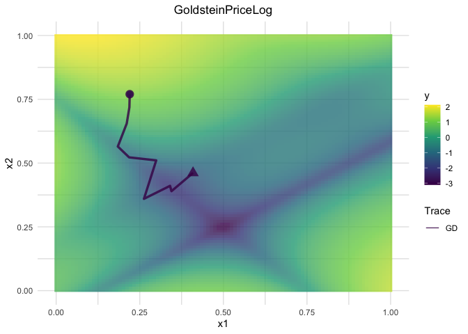

vistool helps you explore optimization concepts and model behavior with a consistent R6 API. Use it to:
- visualize regression and classification loss functions;
- inspect one- and two-dimensional objectives, including custom definitions;
- follow optimization traces for gradient descent, momentum, and Nesterov variants;
- compare model prediction surfaces and decision boundaries.
Every visualizer follows a three-step workflow: initialize with as_visualizer(), add optional layers, then render via plot() (and optionally save()).
Example
library(vistool)
objective = obj("TF_GoldsteinPriceLog")
vis = as_visualizer(objective)
opt = OptimizerGD$new(objective, x_start = c(0.22, 0.77), lr = 0.01)
opt$optimize(10L)
#> TF_GoldsteinPriceLog: Batch 1 step 1: f(x) = 0.9158, x = c(0.219, 0.7186)
#> TF_GoldsteinPriceLog: Batch 1 step 2: f(x) = 0.4217, x = c(0.211, 0.6549)
#> TF_GoldsteinPriceLog: Batch 1 step 3: f(x) = -0.6741, x = c(0.1844, 0.5649)
#> TF_GoldsteinPriceLog: Batch 1 step 4: f(x) = -0.9819, x = c(0.2182, 0.5224)
#> TF_GoldsteinPriceLog: Batch 1 step 5: f(x) = -0.9876, x = c(0.2992, 0.5105)
#> TF_GoldsteinPriceLog: Batch 1 step 6: f(x) = -1.1018, x = c(0.2625, 0.3598)
#> TF_GoldsteinPriceLog: Batch 1 step 7: f(x) = -2.168, x = c(0.3405, 0.4107)
#> TF_GoldsteinPriceLog: Batch 1 step 8: f(x) = -2.1246, x = c(0.3448, 0.3898)
#> TF_GoldsteinPriceLog: Batch 1 step 9: f(x) = -1.3408, x = c(0.4093, 0.4614)
#> TF_GoldsteinPriceLog: Batch 1 step 10: f(x) = -2.1225, x = c(0.3729, 0.3911)
vis$add_optimization_trace(opt, name = "GD")
vis$plot()
Installation
You can install the development version from GitHub with pak:
# install.packages("pak")
pak::pak("slds-lmu/vistool")Prefer base R tooling? remotes::install_github("slds-lmu/vistool") works as well.
Exporting interactive surface plots
When you call save() with an image extension, vistool writes a self-contained HTML snapshot, captures it through webshot2 (ensure Chrome/Chromium is available), and trims the result with magick. You can also call save() with .html to persist the interactive widget directly.
Documentation roadmap
- Loss functions – Open when you need to compare predefined and custom regression or classification losses side by side.
- Model predictions – Visit to inspect 1D/2D mlr3 learners, add boundaries, and overlay training data.
- Objective functions – Read when you explore built-in objectives, define custom ones, or visualize evaluation archives.
- Optimization & traces – Use to understand optimizers, step size control, and how to display optimization progress.
- Customization guide – Start here when you want to tweak themes, colors, and styling precedence.
- Advanced visualization – Open for surface overlays, manual plot augmentations, and animation workflows.
Contributing
For anyone interested in contributing to vistool, please see the Developer reference.